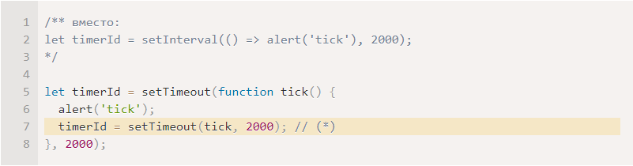

Рекурсия – это когда функция вызывает сама себя.
Пример рекурсивной функции: function pow(x, n) {if (n == 1) {return x;} else {return x * pow(x, n - 1);}}
В примере выше можно заметить if else, тут if служит моментом выхода из рекурсии, когда значение получено.
Рекурсивное решение задачи обычно короче, чем итеративное. Можно писать рекурсию через стрелочные функции.
Рекурсивные функции могут быть использованы для элегантного решения определённых задач.
Информация о процессе выполнения запущенной функции хранится в её контексте выполнения.
Грубо говоря, контекст - это данные в некоторый момент исполнения функции.
Когда функция производит вложенный вызов, происходит следующее:
1) Выполнение текущей функции приостанавливается.
2) Контекст выполнения, связанный с ней, запоминается в специальной структуре данных – стеке контекстов выполнения.
3) Выполняются вложенные вызовы, для каждого из которых создаётся свой контекст выполнения.
4) После их завершения старый контекст достаётся из стека, и выполнение внешней функции возобновляется с того места, где она была остановлена.
Для функции function pow(x, n) {if (n == 1) {return x;} else {return x * pow(x, n - 1);}} контекст pow(2, 3) можно описать так:
{ x: 2, n: 3, строка 5 } -> { x: 2, n: 2, строка 1 } -> { x: 2, n: 1, строка 1 } -> функция завершается, возвращает 2.
Далее функция закончилась, контекст { x: 2, n: 1, строка 1 } удаляется, на верхушке стека { x: 2, n: 2, строка 1 } возвращает 4,
после оно тоже удаляется, на верхушке { x: 2, n: 3, строка 5 } возвращает 8. Глубина рекурсии 3 (стоит помнить что это стек).
Любая рекурсия может быть переделана в цикл. Как правило, вариант с циклом будет эффективнее.
Например, у нас есть компания, в компании есть отделы, а там подотделы, а там подразделения, и в этой вложенности у сотрудников есть зп. Как её посчитать? Рекурсивно, итеративно не выйдет.
Для чего? Например упорядоченный список объектов (массив не подходит из-за медленной вставки/удаления).
Элемент связанного списка определяется рекурсивно как объект с: value, next – свойство,
ссылающееся на следующий элемент связанного списка или null, если это последний элемент.
Пример: let list = { value: 1 }; list.next = { value: 2 }; list.next.next = { value: 3 }; list.next.next.next = { value: 4 };
1) Список можно легко разделить на несколько частей: let secondList = list.next.next; list.next.next = null;
2) И впоследствии объединить обратно: list.next.next = secondList;
3) Для добавления нового элемента, нужно обновить первый элемент списка: list = { value: "new item", next: list };
4) Чтобы удалить элемент из середины списка, нужно изменить значение next предыдущего элемента: list.next = list.next.next;
Главным недостатком является то, что мы не можем легко получить доступ к элементу по его индексу.
В простом массиве: arr[n] является прямой ссылкой. Но в списке мы должны начать с первого элемента и перейти в next N раз, чтобы получить N-й элемент.
function sumTo(n) {
let sum = 0;
for (let i = 1; i <= n; i++) {
sum += i;
}
return sum;
}
function sumTo(n) {
if (n === 1) {
return 1;
}
return n + sumTo(n - 1);
}
// sumTo(n) = n*(n+1)/2
function sumTo(n) {
return n * (n + 1) / 2;
}
function factorial(n) {
return (n !== 1) ? factorial(n - 1) : 1;
}
function fib(n) {
return (n <= 1) ? n : (fib(n - 1) + fib(n + 1));
}
function printList(list) {
while(list) {
alert(list.value);
list = list.next;
}
}
function printList(list) {
alert(list.value);
if (list.next) {
printList(list.next);
}
}
???
function printReverseList(list) {
if (list.next) {
printReverseList(list.next);
}
alert(list.value);
}
Вызывать функцию можно с любым количеством аргументов независимо от того, как она была определена.
Лишние аргументы не вызовут ошибку, но посчитаются только те, которые являются параметрами функции.
Остаточные параметры означают: «собери оставшиеся параметры и положи их в массив»: function sumAll(...args) {...}
Важно помнить, что остаточные парамтеры запишутся в массив args.
Остаточные параметры должны располагаться в конце.
Все аргументы функции находятся в псевдомассиве arguments под своими порядковыми номерами.
Раньше не было остаточных параметров, и получить все аргументы функции можно было только с помощью arguments.
Для более удобной работы с аргументами лучше использовать остаточные параметры.
Стрелочные функции не имеют "arguments". Если мы обратимся к arguments из стрелочной функции, то получим аргументы внешней «нормальной» функции.
Он похож на остаточные параметры – тоже использует ..., но делает совершенно противоположное.
Когда ...arr используется при вызове функции, он «расширяет» перебираемый объект arr в список аргументов.
Пример: let arr1 = [1, -2, 3, 4]; let arr2 = [8, 3, -8, 1]; alert( Math.max(...arr1, ...arr2) ); // 8
Оператор расширения можно использовать для слияния массивов: let arr = [3, 5, 1]; let arr2 = [8, 9, 15]; let merged = [0, ...arr, 2, ...arr2];
Оператор расширения работает только с итерируемыми объектами. Если нужно сделать из чего угодно массив, то Array.from — более универсальный метод.
В JavaScript у каждой выполняемой функции, блока кода и скрипта есть связанный с ними внутренний (скрытый) объект,
называемый лексическим окружением LexicalEnvironment, который состоит из двух частей:
1) Environment Record – объект, в котором как свойства хранятся все локальные переменные (а также некоторая другая информация, такая как значение this).
2) Ссылка на внешнее лексическое окружение – то есть то, которое соответствует коду снаружи (снаружи от текущих фигурных скобок).
"Переменная" – это просто свойство специального внутреннего объекта: Environment Record.
«Получить или изменить переменную», означает, «получить или изменить свойство этого объекта».
Переменная – это свойство специального внутреннего объекта, связанного с текущим выполняющимся блоком/функцией/скриптом.
Работа с переменными – это на самом деле работа со свойствами этого объекта.
В отличие от переменных, объявленных с помощью let, они полностью инициализируются не тогда,
когда выполнение доходит до них, а раньше, когда создаётся лексическое окружение.
Для верхнеуровневых функций это означает момент, когда скрипт начинает выполнение
(Вот почему мы можем вызвать функцию, объявленную через Function Declaration, до того, как она определена):
При запуске функции для неё автоматически создаётся новое лексическое окружение, для хранения локальных переменных и параметров вызова.
В процессе вызова функции у нас есть два лексических окружения: внутреннее (для вызываемой функции) и внешнее (глобальное).
Когда код хочет получить доступ к переменной – сначала происходит поиск во внутреннем лексическом окружении, затем во внешнем,
затем в следующем и так далее, до глобального. Если переменная не была найдена, это будет ошибкой в strict mode. Без strict mode,
для обратной совместимости, присваивание несуществующей переменной создаёт новую глобальную переменную с таким именем.
Функция получает текущее значение внешних переменных, то есть, их последнее значение:
Старые значения переменных нигде не сохраняются. Когда функция хочет получить доступ к переменной,
она берёт её текущее значение из своего или внешнего лексического окружения.
Новое лексическое окружение функции создаётся каждый раз, когда функция выполняется.
Если функция вызывается несколько раз, то для каждого вызова будет своё лексическое окружение,
со своими, специфичными для этого вызова, локальными переменными и параметрами.
Функция называется «вложенной», когда она создаётся внутри другой функции.
В JavaScript вложенные функции используются очень часто.
Пример вложенной функции:
Когда внутренняя функция начинает выполняться, начинается поиск переменной count++ изнутри-наружу:
Локальные переменные вложенной функции… Переменные внешней функции… И так далее, пока не будут достигнуты глобальные переменные.
1) Сбросить счётчик внутри функции мы не можем. Мы не можем получить к ней доступ извне.
2) Для каждого вызова функции создаётся новое лекс. окружение: let fn1 = funcName(); let fn2 = funcName(); - независимы друг от друга.
1) Когда скрипт только начинает выполняться, есть только глобальное лексическое окружение
Все функции «при рождении» получают скрытое свойство [[Environment]], которое ссылается на лексическое окружение места, где они были созданы.
2) Код продолжает выполняться, объявляется новая глобальная переменная counter, которой присваивается результат вызова makeCounter. В момент вызова makeCounter() создаётся лексическое окружение, для хранения его переменных и аргументов.
3) В процессе выполнения makeCounter() создаётся небольшая вложенная функция. Не имеет значения, какой способ объявления функции используется:
Function Declaration или Function Expression. Все функции получают свойство [[Environment]], которое ссылается на лексическое окружение,
в котором они были созданы.
На этом шаге внутренняя функция была создана, но ещё не вызвана. Код внутри function() { return count++ } не выполняется.
4) Выполнение продолжается, вызов makeCounter() завершается, и результат (небольшая вложенная функция) присваивается глобальной переменной counter.
В этой функции есть только одна строчка: return count++, которая будет выполнена, когда мы вызовем функцию.
5) При вызове counter() для этого вызова создаётся новое лексическое окружение. Оно пустое, так как в самом counter локальных переменных нет.
Но [[Environment]] counter используется, как ссылка на внешнее лексическое окружение outer,
которое даёт доступ к переменным предшествующего вызова makeCounter, где counter был создан.
Теперь, когда вызов ищет переменную count, он сначала ищет в собственном лексическом окружении (пустое),
а затем в лексическом окружении предшествующего вызова makeCounter(), где и находит её.
В большинстве случаев, объект лексического окружения существует до того момента, пока есть функция, которая может его использовать.
6) Вызов counter() не только возвращает значение count, но также увеличивает его. Обратите внимание,
что модификация происходит «на месте». Значение count изменяется конкретно в том окружении, где оно было найдено.
Следующие вызовы counter() сделают то же самое.
Ответ на второй вопрос из начала главы:
Функция work() в коде ниже получает name из того места, где была создана, через ссылку на внешнее лексическое окружение:
Так что, результатом будет "Pete". Но, если бы в makeWorker() не было let name, тогда бы поиск продолжился дальше и была бы взята глобальная переменная.
Замыкание – это функция, которая запоминает свои внешние переменные и может получить к ним доступ.
То есть, они автоматически запоминают, где были созданы, с помощью скрытого свойства [[Environment]]
и все они могут получить доступ к внешним переменным.
Предыдущие примеры сосредоточены на функциях. Но лексическое окружение существует для любых блоков кода {...}.
Лексическое окружение создаётся при выполнении блока кода и содержит локальные переменные для этого блока.
1) If: В следующем примере переменная user существует только в блоке if (а phrase берётся из ссылки на внешнее окружение):
2) For, while: Для цикла у каждой итерации своё отдельное лексическое окружение. Если переменная объявлена в for(let ...), то она также в нём.
for (let i = 0; i < 10; i++) {...} alert(i); // Ошибка, нет такой переменной
let i визуально находится снаружи {...}. Но конструкция for – особенная в этом смысле,
у каждой итерации цикла своё собственное лексическое окружение с текущим i в нём.
3) Блоки кода: Мы также можем использовать «простые» блоки кода {...}, чтобы изолировать переменные в «локальной области видимости»:
{let message = "Hello"; alert(message); // Hello} alert(message); // Ошибка: переменная message не определена
«immediately-invoked function expressions» (аббревиатура IIFE), что означает функцию, запускаемую сразу после объявления.
Это не то, что мы должны использовать сегодня, но, полезно понимать принцип работы.
Синтаксис: (function() {let message = "Hello";alert(message);})();
Стоит обратить внимание, что это работает только с анонимными функциями.
Независимы. Покажет 0, 1.
// Одно лексическое окружение, имеют доступ к count
counter.up() // 1
counter.up() // 2
counter.down() // 1
// ошибка, т.к. sayHi объявлена внутри if, существует только внутри этого блока {}
function sum(a) {
return function(b) {
return a + b;
}
}
function inBetween(a, b) {
return function(x) {
return (x >= a && x <= b);
}
}
// filter вызывается много раз для каждого элемента массива, где х - это каждый элемент массива
function inArray(arr) {
return function(x) {
return arr.includes(x);
}
}
function byField(fieldName) {
return function(a, b) {
return (a[fieldName] > b[fieldName]) ? 1 : -1;
}
}
???
Область видимости переменных var ограничивается либо функцией, либо, если переменная глобальная,
то скриптом. Такие переменные доступны за пределами блока {...}. Пример:
if (true) {var test = true;} alert(test); // true
Т.е. код 1 эквивалентен коду 2:
1) function sayHi() {phrase = "Привет";alert(phrase);var phrase;}
2) function sayHi() {var phrase;phrase = "Привет";alert(phrase);}
Объявления переменных «всплывают», но присваивания значений – нет. Т.е. код 3 эквивалентен коду 4:
3) function sayHi() {alert(phrase);var phrase = "Привет";}
4) function sayHi() {var phrase;alert(phrase);phrase = "Привет";} // undefined
Глобальный объект предоставляет переменные и функции, доступные в любом месте программы.
В браузере он называется window, в Node.js — global.
Ко всем свойствам глобального объекта можно обращаться напрямую: alert("Привет"); то же самое, что и window.alert("Привет");
Обычно не рекомендуется использовать глобальные переменные.
Глобальный объект можно использовать, чтобы проверить поддержку современных возможностей языка.
Например, проверить наличие встроенного объекта Promise: if (!window.Promise) {alert("Ваш браузер очень старый!");}
Если нет (скажем, используется старый браузер), мы можем создать полифил: добавить функции,
которые не поддерживаются окружением, но существуют в современном стандарте. window.Promise = ... // собственная реализация современной возможности языка
В JavaScript функции – это объекты. «объект, который может делать какое-то действие»
Функции можно не только вызывать, но и использовать их как обычные объекты: добавлять/удалять свойства, передавать их по ссылке и т.д.
Имя функции нам доступно как свойство «name»: alert(sayHi.name); // sayHi
Содержит количество параметров функции в её объявлении.
function f1(a) {} function f2(a, b) {} function many(a, b, ...more) {}
alert(f1.length); // 1 alert(f2.length); // 2 alert(many.length); // 2
Мы также можем добавить свои собственные свойства.
NFE – это термин для Function Expression, у которого есть имя.
Пример: let sayHi = function func(who) {...}
А зачем имя func? 1) позволяет функции ссылаться на себя же; 2) не доступно за пределами функции.
Например, ниже функция sayHi вызывает себя с "Guest", если не передан параметр who:
Почему не сделаем так: else {sayHi("Guest");} ?
Потому что если переопределим sayHi, получим ошибку: sayHi берётся из внешнего лексического окружения
(т.к. локальная отсутствует), и если зададим ей null, то на "последний" момент вызова она будет равна null.
"func" локальное и находится внутри функции. Теперь оно взято не снаружи (и недоступно оттуда).
Спецификация гарантирует, что оно всегда будет ссылаться на текущую функцию.
Трюк с «внутренним» именем, описанный выше, работает только для Function Expression и не работает для Function Declaration.
function makeCounter() {
let count = 0;
function counter() {
return count++;
}
counter.set = function(val) {
count = value;
}
counter.decrease = function() {
count--;
}
return counter;
}
function sum(a) {
let currSum = a;
function f(b) {
currSum += b;
return f;
}
f.toString = function() {
return currSum;
}
return next;
}
Существует ещё один вариант объявлять функции. Он используется крайне редко.
let func = new Function([arg1, arg2, ...argN], functionBody);
Мы можем вызвать функцию не в данный момент, а позже, через заданный интервал времени. Это называется «планирование вызова».
1) setTimeout позволяет вызвать функцию один раз через определённый интервал времени.
2) setInterval позволяет вызывать функцию регулярно, повторяя вызов через определённый интервал времени.
Синтаксис: let timerId = setTimeout(func, [delay], [arg1], [arg2], ...)
1) func: Функция или строка кода для выполнения. Обычно это функция.
2) delay: Задержка перед запуском в миллисекундах (1000 мс = 1 с). Значение по умолчанию – 0.
3) arg1, arg2: Аргументы, передаваемые в функцию.
Пример (код вызывает sayHi() спустя одну секунду): setTimeout(sayHi, 1000);
Передавайте функцию, но не запускайте её. Так - неправильно: setTimeout(sayHi(), 1000);
Вызов setTimeout возвращает «идентификатор таймера» timerId, который можно использовать для отмены дальнейшего выполнения.
Синтаксис для отмены: let timerId = setTimeout(...); clearTimeout(timerId);
Есть два способа запускать что-то регулярно: setInterval и рекурсивный setTimeout. Пример:
Рекурсивный setTimeout позволяет задать задержку между выполнениями более точно, чем setInterval.
Особый вариант использования: setTimeout(func, 0) или просто setTimeout(func).
Это планирует вызов func настолько быстро, насколько это возможно. Но планировщик будет
вызывать функцию только после завершения выполнения текущего кода. Так вызов функции
будет запланирован сразу после выполнения текущего кода.
Пример: setTimeout(() => alert("Мир")); alert("Привет");
Первая строка помещает вызов в «календарь» через 0 мс.
Но планировщик проверит «календарь» только после того, как текущий код завершится.
Поэтому "Привет" выводится первым, а "Мир" – после него.
function printNumbers(from, to) {
let current = from;
let timerId = setInterval(function() {
alert(current);
if (current === to) clearInterval(timerId);
current++;
}, 1000);
}
function printNumbers(from, to) {
let current = from;
let timerId = setTimeout(function tick() {
alert(current);
if (current < to) setTimeout(tick, 1000);
current++;
}, 1000);
}
1. Объявился i;
2. setTimeout зашёл в стек
3. for зашёл в стек
Ответ: 100000000 // setTimeout ждёт пока for выйдет из стека
Представим, что у нас есть функция slow(x), выполняющая ресурсоёмкие вычисления, но возвращающая стабильные результаты.
Если функция вызывается часто, то, вероятно, мы захотим кешировать (запоминать) возвращаемые ею результаты,
чтобы сэкономить время на повторных вычислениях.
Вместо того, чтобы усложнять slow(x) дополнительной функциональностью, мы заключим её в функцию-обёртку – «wrapper», которая добавит кеширование.
С точки зрения внешнего кода, обёрнутая функция slow по-прежнему делает то же самое. Обёртка всего лишь добавляет к её поведению аспект кеширования.
Упомянутый выше кеширующий декоратор не подходит для работы с методами объектов.
В нашем случае мы можем использовать call в обёртке для передачи контекста в исходную функцию:
Теперь давайте сделаем cachingDecorator ещё более универсальным.
До сих пор он работал только с функциями с одним аргументом.
Вот более мощный cachingDecorator:
Задачи украли цыгане
При передаче методов объекта в качестве колбэков, например для setTimeout, возникает потеря this.
Вот как это может произойти в случае с setTimeout:
Это произошло потому, что setTimeout получил функцию sayHi отдельно от объекта user (именно здесь функция и потеряла контекст).
То есть последняя строка может быть переписана как: let f = user.sayHi; setTimeout(f, 1000); // контекст user потеряли
Базовый синтаксис bind: let boundFunc = func.bind(context);
Вызов boundFunc подобен вызову func с фиксированным this.
Теперь давайте попробуем с методом объекта:
Обычно bind применяется для фиксации this в методе объекта, чтобы передать его в качестве колбэка. Например, для setTimeout.
null
Вася, т.к. мы не можем изменить уже созданную привязку.
undefined, т.к. bind привязывается к другому объекту без свойства test.
Если происходит обращение к this, его значение берётся снаружи.
Стрелочные функции не могут быть использованы как конструкторы. Они не могут быть вызваны с new.
У стрелочных функций также нет переменной arguments.